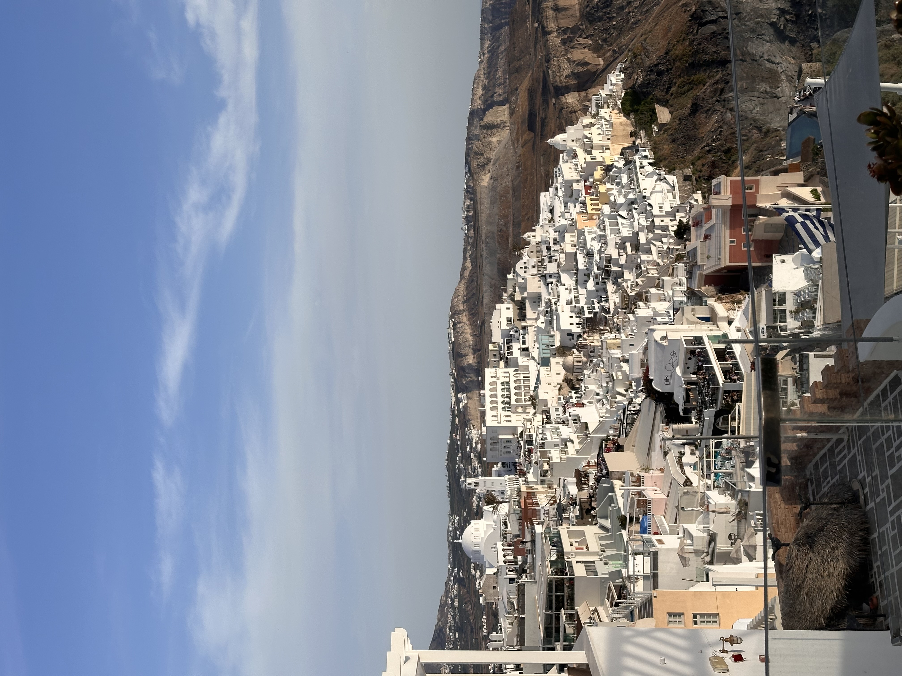
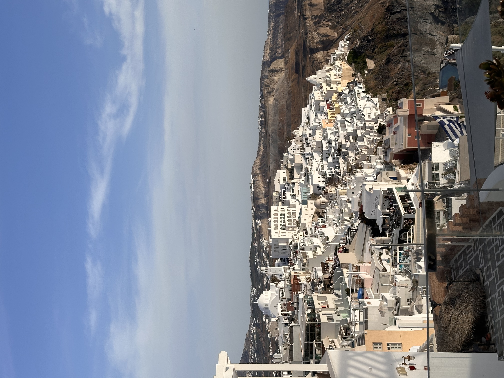

Make new friends whether its in a tour group, solo traveling, in hostels, with your bunkmates, and so many other ways to make friends. If you ever solo travel, you never really do solo travel. Since you make friends everyone and then you do things with those people that you meet. When I was in London I found a group of people to hangout within the first day of being in London and we spent most of our days with each other going to markets, getting coffee, going to the bar or pub, and going out that night with each other.Whether we were going thrifiting or out for drinks we always had our group that we knew we could hang with. Having this group did not stop me from making other friends as well. There were times where I went places with other people I met that night and my og group was wondering where I had gone off to. Also with tour groups many people book tour groups alone and want to make new friends. Even when I went on a tour group with friends, I made other friends within the tour group. The best part about this is you meet people from all over the world and country. I've met people from New Zealand, Austria, Germany, Italy, and so much more. I've almost met people all over the US from the West Coast to Midwest to East Coast. So if you want travel friends or to meet new people traveling for YOU!!!

The memories that you will make will be Unforgettable whether its coming back from the bar at 6 am in London and having to leave at 7 am to go to Amsterdam. Or hiking up an active volcano. Or laying by the pool or beach just enjoying the weather, the vibes, and the people that you are with. Explore the cities and make sure to stop a coffee shop and just people watch. There are so many memories you can make with yourself and with others when you are traveling. So make sure to capture lots of your memories and fun times from your trips. You'll miss it when you get back home.
 

Do the things you usually wouldn't be doing. Say yes to everything and you will be having fun every and each day you are traveling. Sometimes in hostels people will as if you want to travel with them or do an experience that you usually wouldn't. When I was abroad I got to experience so much like going to Flamenco show, booked a sailboat on airbnb experiences, did a speed friending event at a hostel. Just go out and have fun and try new things and experience new things. The food, cultures, and ambiance of the places are amazing and unforgettable. So do it for the plot!